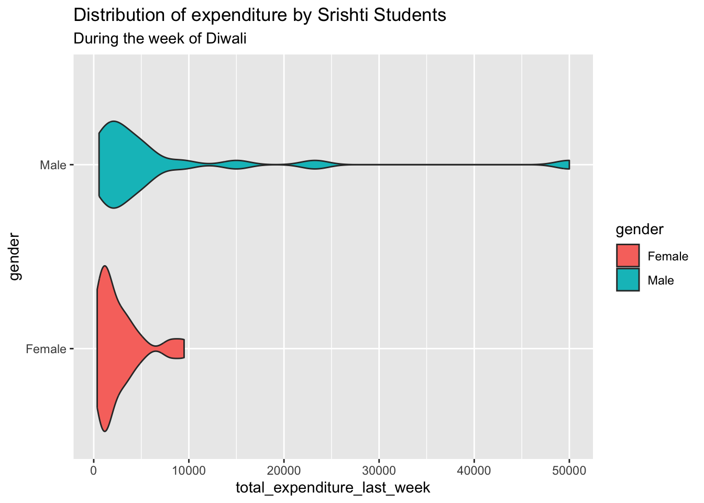
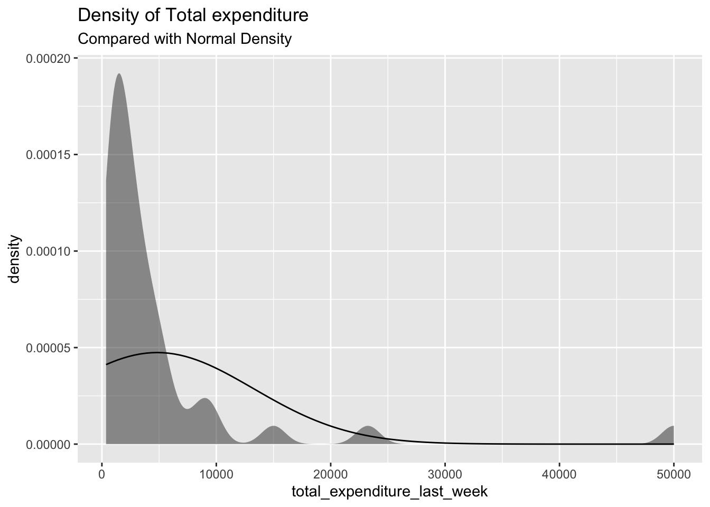

Diwali Week Expenditure Analysis of Srishti Students
This dataset captures the spending patterns of Srishti students during Diwali week.
Data Dictionary
Qualitative Variables
Name: Factor indicating name of the participant.
gender: Factor indicating sex. Gender refers to either Male or Female.
total_expenditure_last_week: Numeric indicating total amount spent by the student during Diwali week, measured in Indian Rupees (₹),
Our questions/ assumptions before performing EDA:
Would there be a significant difference in average expenditure between male and female students during Diwali week?
Student allowances/ income are typically modest, so less than 20% of students spend more than ₹5,000 during Diwali week.
Setting up the libraries
library(tidyverse)
── Attaching core tidyverse packages ──────────────────────── tidyverse 2.0.0 ──
✔ dplyr 1.1.4 ✔ readr 2.1.5
✔ forcats 1.0.0 ✔ stringr 1.5.2
✔ ggplot2 4.0.0 ✔ tibble 3.3.0
✔ lubridate 1.9.4 ✔ tidyr 1.3.1
✔ purrr 1.1.0
── Conflicts ────────────────────────────────────────── tidyverse_conflicts() ──
✖ dplyr::filter() masks stats::filter()
✖ dplyr::lag() masks stats::lag()
ℹ Use the conflicted package (<http://conflicted.r-lib.org/>) to force all conflicts to become errors
library(mosaic) # Our go-to package
Registered S3 method overwritten by 'mosaic':
method from
fortify.SpatialPolygonsDataFrame ggplot2
The 'mosaic' package masks several functions from core packages in order to add
additional features. The original behavior of these functions should not be affected by this.
Attaching package: 'mosaic'
The following object is masked from 'package:Matrix':
mean
The following objects are masked from 'package:dplyr':
count, do, tally
The following object is masked from 'package:purrr':
cross
The following object is masked from 'package:ggplot2':
stat
The following objects are masked from 'package:stats':
binom.test, cor, cor.test, cov, fivenum, IQR, median, prop.test,
quantile, sd, t.test, var
The following objects are masked from 'package:base':
max, mean, min, prod, range, sample, sum
library(ggformula)library(infer) # An alternative package for inference using tidy data
Attaching package: 'infer'
The following objects are masked from 'package:mosaic':
prop_test, t_test
library(broom) # Clean test results in tibble formlibrary(skimr) # data inspection
Attaching package: 'skimr'
The following object is masked from 'package:mosaic':
n_missing
library(tinytable) # Pretty Tables
Attaching package: 'tinytable'
The following object is masked from 'package:ggplot2':
theme_void
library(kableExtra) # Pretty Tables
Attaching package: 'kableExtra'
The following object is masked from 'package:dplyr':
group_rows
library(ggprism) # Prism-like ggplot themeslibrary(resampledata3) # Datasets from Chihara and Hesterberg's book
Attaching package: 'resampledata3'
The following object is masked from 'package:datasets':
Titanic
library(openintro) # datasets
Loading required package: airports
Loading required package: cherryblossom
Loading required package: usdata
Attaching package: 'openintro'
The following object is masked from 'package:mosaic':
dotPlot
The following objects are masked from 'package:lattice':
ethanol, lsegments
library(infer)library(vcd)
Loading required package: grid
Attaching package: 'vcd'
The following object is masked from 'package:mosaic':
mplot
library(resampledata)
Attaching package: 'resampledata'
The following objects are masked from 'package:resampledata3':
Bushmeat, ChiMarathonMen, Cuckoos, FlightDelays, Groceries,
IceCream, MobileAds, NCBirths2004, Olympics2012, Phillies2009,
Recidivism
The following object is masked from 'package:datasets':
Titanic
library(openintro)library(readr)library(naniar)
Attaching package: 'naniar'
The following object is masked from 'package:skimr':
n_complete
library(janitor)
Attaching package: 'janitor'
The following objects are masked from 'package:stats':
chisq.test, fisher.test
library(DT)library(crosstable)
Attaching package: 'crosstable'
The following object is masked from 'package:purrr':
compact
library(geofacet)library(ggplot2)
Reading The Data
Weeklyexp <- readr::read_delim("~/Downloads/Datasets for A3/weeklyexpense.csv") %>% janitor::clean_names(case ="snake") %>% dplyr::glimpse()
New names:
Rows: 40 Columns: 6
── Column specification
──────────────────────────────────────────────────────── Delimiter: "," chr
(2): Name, Gender dbl (1): Total_Expenditure_Last_Week lgl (3): ...4, ...5,
...6
ℹ Use `spec()` to retrieve the full column specification for this data. ℹ
Specify the column types or set `show_col_types = FALSE` to quiet this message.
• `` -> `...4`
• `` -> `...5`
• `` -> `...6`
# A tibble: 40 × 6
name gender total_expenditure_last_week x4 x5 x6
<chr> <chr> <dbl> <lgl> <lgl> <lgl>
1 Radha Female 2000 NA NA NA
2 Prerana Female 1200 NA NA NA
3 Chris Male 15000 NA NA NA
4 Nireeksha Female 3620 NA NA NA
5 Supraj Male 560 NA NA NA
6 Adit Male 2200 NA NA NA
7 Shweta Female 1500 NA NA NA
8 Diya Female 1206 NA NA NA
9 Kshama Female 1400 NA NA NA
10 Savannah Female 2500 NA NA NA
# ℹ 30 more rows
# A tibble: 40 × 3
name gender total_expenditure_last_week
<fct> <fct> <dbl>
1 Radha Female 2000
2 Prerana Female 1200
3 Chris Male 15000
4 Nireeksha Female 3620
5 Supraj Male 560
6 Adit Male 2200
7 Shweta Female 1500
8 Diya Female 1206
9 Kshama Female 1400
10 Savannah Female 2500
# ℹ 30 more rows
Weeklyexp1 %>%gf_histogram(~total_expenditure_last_week) %>%gf_facet_grid(~gender) %>%gf_labs( title="Distribution of expenditure among sristhi students by gender", subtitle="During the week of Diwali")
`stat_bin()` using `bins = 30`. Pick better value `binwidth`.
Both male and female distributions are heavily right-skewed, meaning most students spend relatively little, but a few extreme high spenders pull the average upward. The median will be much lower than the mean for both groups. Females seem to portray comparatively consistent and moderate spending behavior, in contrast to males, showing more diverse spending behaviors.
Weeklyexp1 %>%gf_boxplot(gender~total_expenditure_last_week, orientation ="y") %>%gf_labs(title="Distribution of expenditure by Srishti Students",subtitle="During the week of Diwali")
Through this boxplot, we understand that males on average spent more during diwali than females in srishti.
Weeklyexp1 %>%gf_violin(gender ~ total_expenditure_last_week, fill =~gender) %>%gf_labs(title="Distribution of expenditure by Srishti Students",subtitle="During the week of Diwali")

For female students, we see the highest density at approximately ₹1,000-₹2,000. We also see very few students beyond ₹5,000.
For male students,primary density peak at ₹2,000-₹4,000. But the distribution is flatter, meaning that the density is more spread out. Multiple smaller peaks suggest different spending subgroups:
Budget spenders (₹0-₹5K) - majority
Moderate spenders (₹10-15K) - small group
High spenders (₹20-25K) - few individuals
Extreme spenders (₹50K+) - rare cases
Is data normally distributed??
Weeklyexp1%>%gf_density(~total_expenditure_last_week) %>%gf_fitdistr(dist ="dnorm") %>%gf_labs(title ="Density of Total expenditure",subtitle ="Compared with Normal Density" )

The data is far from the normality curve. This is a severe violation of the normality assumptions. Most students spend very little, but the few high spenders are SO extreme that they pull the theoretical normal distribution way to the right, making it completely misaligned with reality.
The data shows that Srishti students’ Diwali week spending is highly right-skewed, with most spending modest amounts and a few outliers spending very large sums. Males generally spent more than females, but the variation within the male group is much higher. The distribution clearly violates normality assumptions, as confirmed by the Shapiro–Wilk test.